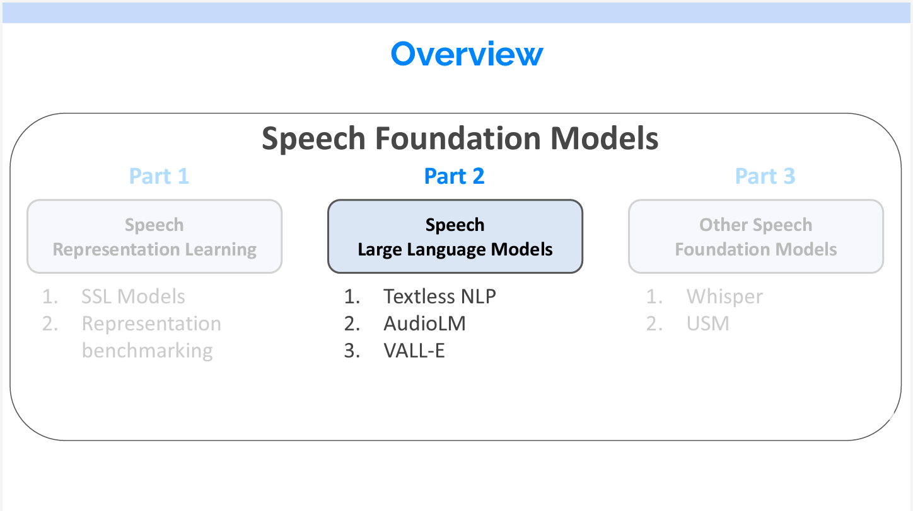
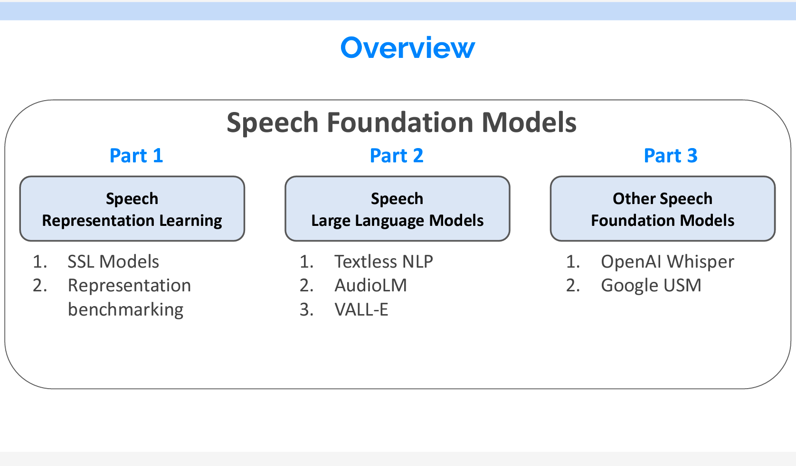
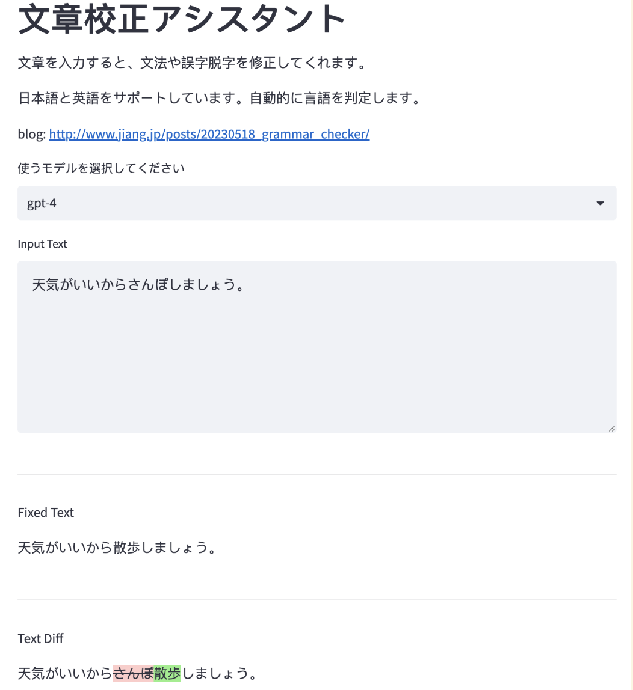
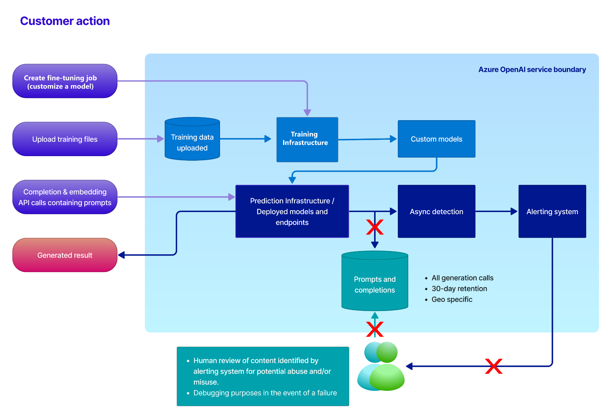
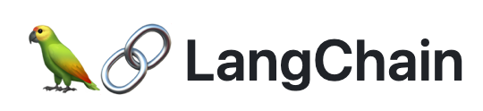
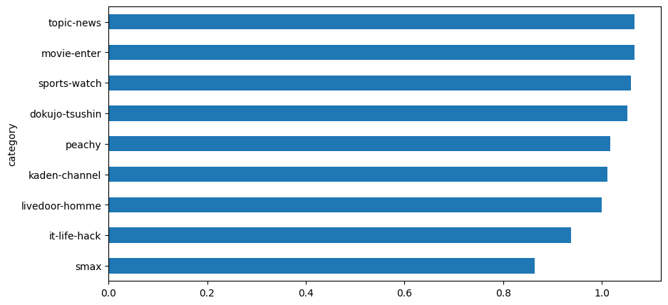
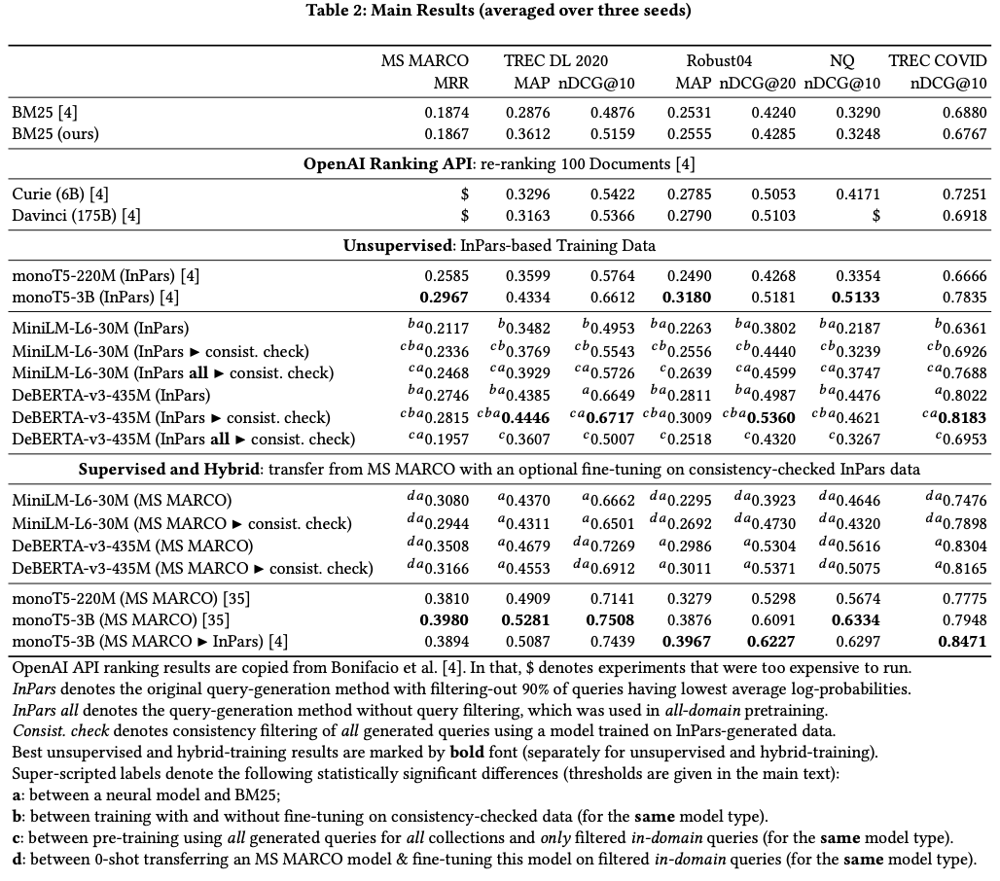
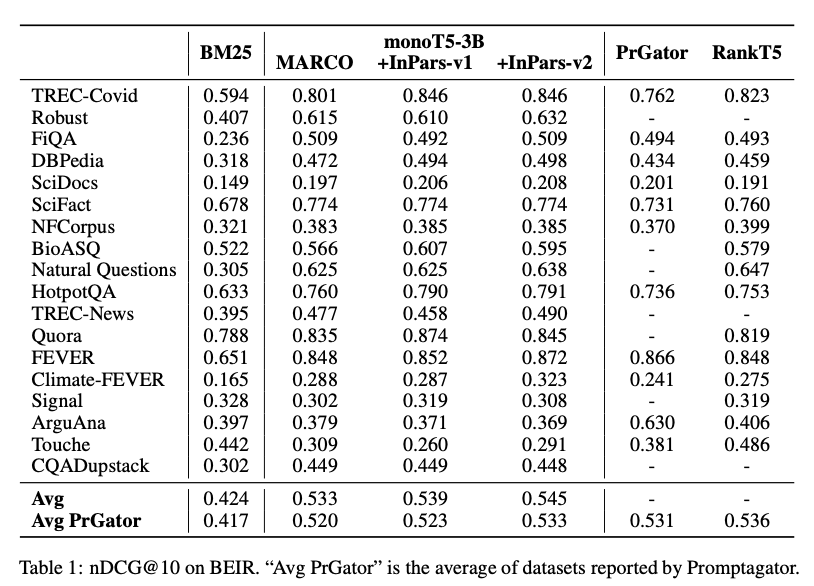
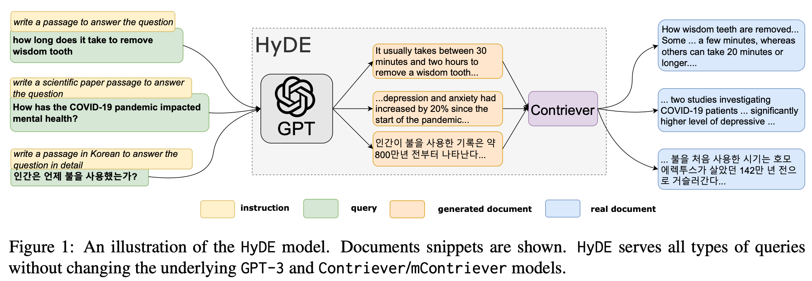
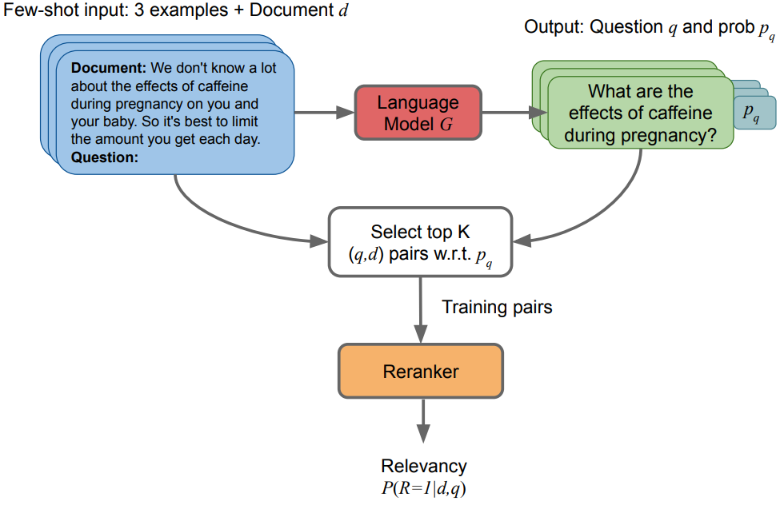

blog
About
自然言語処理技術ブログ
Categories
All
(13)
Information_retrieval
(5)
LLMs
(6)
LangChain
(4)
NLP
(11)
Speech Recognition
(2)
paper
(5)
Order By
Default
Title
Date - Oldest
Date - Newest

音声基礎モデルの紹介 Part2
Speech Recognition
音声基礎モデルに関する内容を3部分に分けて紹介しています。このポストはPart2と3について紹介します。
May 28, 2023

音声基礎モデルの紹介 Part1
Speech Recognition
本文の内容はYoutubeで音声認識に関する講義に基づいています。全体は3部分に分けられます。本文は音声表現学習に焦点を当て、対照学習モデルと予測モデルの両方について説明します。次のパートでは、音声大型言語モデルやその他の音声基礎モデルについて詳しく説明します。
May 27, 2023

GPT文書校正アシスタント
NLP
LLMs
ChatGPTが登場する前、書いたものが正しいかをチェックするために、いつも「Back Translation」の手法を使っていました。つまり、DeepLでまず書いた日本語を中国語に訳し、正しい意味を伝えたかを確認します。修正したものを日本語に訳し、それに基づいて元の文書を修正します。
May 19, 2023
LangChain Hypothetical Document Embeddings (HyDE) 全面解説
NLP
LLMs
LangChain
Hypothetical Document Embeddings (HyDE)は去年提出した情報検索の精度を向上させるための手法です。
May 15, 2023

Azure OpenAI Serviceの利用について
NLP
LLMs
最近、GPTを用いた提案を行う際のお作法についていくつかの問い合わせを受けています。実は、筆者もGPTを利用したプロジェクトを担当し、いくつかの問題でコケた経験があります。その経験をまとめてみたいと思います。
May 10, 2023
LangChain Agentの全面解説
NLP
LLMs
LangChain
LangChainの中に最もハイレベルな概念としてはAgentです。以前の投稿の中でも話ましたが、LangChainはまだ未熟なライブラリなので、Agentの実装は複雑なものになっていますし、中身の挙動を説明するドキュメントもなかったので、本文ではAgentの使い方から、インプットからアウトプットまでの流れを説明していきます。
May 9, 2023

LangChainのベーシックを全面解説する
NLP
LLMs
LangChain
OpenAIのGPTのAPIを利用してアプリを作成するには、今まで一番使いやすいパッケージはLangChain🦜️🔗 だと思います。本文では、LangChainの基本的な使い方を優しく説明します。
May 6, 2023

OpenAIのGPTのAPIのToken数に関する調査
NLP
LLMs
LangChain
OpenAIのGPTモデルでドキュメントを処理する際に、日本語の1文字は大よそ1Tokenに等しいです。千文字のドキュメントを処理するためには、概算で、スピード重視の
gpt-3.5-turbo
を使う場合は0.59円かかります。性能重視の
gpt-4-32k
を利用する場合は、9.7円かかります。
May 5, 2023

InPars light 論文解読
NLP
Information_retrieval
paper
InPars-lightは、無料で利用可能な言語モデルBLOOMをランキングモデルを使用し、1000個ではなく100個の候補レコードを再ランクしした。…
May 2, 2023

InPars V2 論文解読
NLP
Information_retrieval
paper
In…
May 1, 2023

HyDE 論文解読
NLP
Information_retrieval
paper
HyDE論文では、教師なしのZero-shot dense retrievalシステムを提案。従来のDense…
Apr 30, 2023
Promptagator 論文解読
NLP
Information_retrieval
paper
Promptagator論文では、Few-shot Retrieval…
Apr 29, 2023

InPars 論文解読
NLP
Information_retrieval
paper
InPars論文では、擬似データ（Pseudo data）生成によるランキングモデル学習手法を提案。LLMを用いて擬似データを生成し、それを使ってモデルを学習させることで、情報検索（IR）の精度を向上させる。実験では、生成された擬似データでMonoT5をFine-tuningし、結果として従来のUnsupervisedモデルより優れた性能を示した。
Apr 29, 2023
No matching items